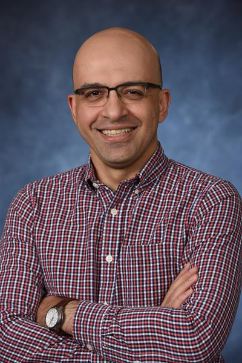
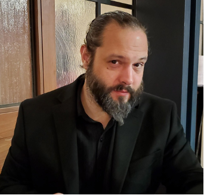
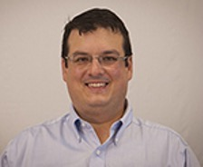
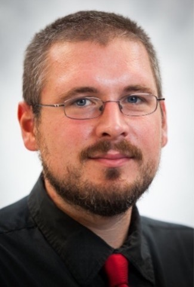

Biography
Dr. Hessam Babaee is currently an Assistant Professor in the Department of Mechanical
engineering and Materials Science at the University of Pittsburgh. He earned his
Ph.D. in Mechanical Engineering and master’s in applied mathematics both from
Louisiana State University in 2013. He then joined the Mechanical Engineering
Department at MIT for his postdoctoral research, where he worked with Prof. George
Karniadakis. He then joined the University of Pittsburgh in January 2017. His
research is focused on developing reduced-order models and machine learning
techniques for fluid mechanics problems. His research has been funded by many
organizations including NASA, the National Science Foundation (NSF), the National
Institute of Health (NIH), and the Air Force Office of Scientific Research (AFOSR).
Research interests
- On-the-fly Random Order Modeling of High-Dimensional PDE
- Reduction of Sensor Multi-Dimensional Data
- High Perfromance Computing
- Multi-Fidelity Modeling
- Multi-Physics Modeling
- Stochastic Modeling
- Uncertainty Quantification
Biography
In 2006, Shankar earned his Ph.D. in Industrial Engineering from Purdue University
and started as an assistant professor at the University of Pittsburgh. His primary
appointment was in Industrial Engineering, with a secondary appointment in
Mechanical Engineering and Materials Science. In 2009, he was awarded the Whiteford
faculty fellowship by the Swanson School of Engineering. In 2012, he was tenured and
promoted to the rank of associate professor. In 2016, he was promoted to the rank of
full professor and continued to hold the Whiteford endowed position. In 2019, he was
awarded the Swanson Professorship. Shankar received the SME’s Outstanding Young
Manufacturing Engineer award in 2010 and was named the Institute of Industrial
Engineer’s Outstanding Early Career IE in 2014.
Shankar’s research program is broadly in the areas of manufacturing and materials
engineering with a particular focus on bulk nanomaterials, nanomanufacturing, 3D
printing, microrobotics and adaptive metamaterials. He has been supported by the
NSF, Navy, Air Force, DARPA, Manufacturing Innovation Institutes, the State of PA,
philanthropic foundations, and Industry partners. His work has appeared in an array
of archival journals ranging from the Proceedings of the National Academy of
Sciences, Nature Communications, Advanced Functional Materials, Acta Materialia,
Applied Physics Letters, as well as ASME, IIE and ACS families of journals. His work
also resulted in 4 published patents and 2 pending applications. He has overseen 10
postdocs, 9 Ph.D students, several of whom have gone on to build academic careers of
their own.
Research interests
- Soft Robotics
- IR-based NDE
- Surface Moification Technologies for Remanufacturing
Brandon Grainger
UPittISC Affiliate Faculty (Pitt ECE)
Assistant Professor, Electrical & Computer
Engineering
Associate Director, Energy GRID Institute / Power Program

Biography
Dr. Brandon Grainger is currently an Eaton faculty fellow and an assistant professor
and associate director of the Electric Power Engineering program in the Department
of Electrical and Computer Engineering at the University of Pittsburgh (Pitt),
Swanson School of Engineering. He is also the associate director of the Energy GRID
Institute. He holds a PhD in electrical engineering with a specialization in power
conversion. He also obtained his master’s degree in electrical engineering and
bachelor’s degree in mechanical engineering (with minor in electrical engineering)
all from Pitt.
He was also one of the first original R.K. Mellon graduate student fellows through
the Center for Energy at Pitt.
Dr. Grainger has either worked or interned for ABB Corporate Research in Raleigh, NC;
ANSYS Inc. in Southpointe, PA; Mitsubishi Electric in Warrendale, PA; Siemens
Industry in New Kensington, PA; and has regularly volunteered at Eaton’s Power
Systems Experience Center in Warrendale, PA designing electrical demonstrations. In
his career thus far, he has contributed to 70+ articles in the general area of
electric power engineering (emphasis on electric power conversion) and all of which
have been published through the IEEE or ASNE.
Dr. Grainger is a member of the IEEE Power Electronics Society (PELS), and
Industrial Electronics Society (IES) and is an annual reviewer of various power
electronic conferences and transaction articles. Dr. Grainger is a Senior Member of
the IEEE and served as the IEEE Pittsburgh PELS Chapter Chair over 3 years for which
the section has won numerous awards under his leadership.
Research interests
- Power Electronic Converter Design
- High Power Density Design Strategies
- Multiport Designs (Solid State Transformers, etc)
- Wide Bandgap Devices (GaN for Aerospace)
- High Voltage Power Electronics (STATCOM, etc.)
Biography
Dr. Mostafa Bedewy is an Assistant Professor of Industrial Engineering, with secondary
appointments in Chemical & Petroleum Engineering, and Mechanical Engineering & Materials
Science at the University of Pittsburgh, where he leads the NanoProduct Lab. Before that, he
was a Postdoctoral Associate at the Massachusetts Institute of Technology (MIT) in the area
of bionanofabrication in the
Research Lab for Electronics (RLE). Also, he worked previously as a Postdoc and as a
graduate student at the MIT Laboratory for Manufacturing and Productivity (LMP) on in situ
characterization of carbon nanotube growth. In 2013, he completed his PhD at the University
of Michigan in Ann Arbor, where he worked on studying the population dynamics and the
collective mechanochemical factors governing the growth and self-organization of filamentary
nanostructures. He holds a Bachelor’s degree (honors) in Mechanical Design and Production
Engineering (2006) and a Master’s degree in Mechanical Engineering (2009), both from Cairo
University.
Dr. Bedewy recently received the Frontiers of Materials Award from the Minerals, Metals and
Materials Society (TMS) in 2022, the Outstanding Young Investigator Award from the Institute
of Industrial and Systems Engineers’ Manufacturing and Design (IISE M&D) Division in 2020,
the Outstanding Young Manufacturing Engineer Award from the Society of Manufacturing
Engineers (SME) in 2018, the Ralph E. Powe Junior Faculty Enhancement Award from the Oak
Ridge Associated Universities (ORAU) in 2017, the Robert A. Meyer Award from the American
Carbon Society in 2016, the Richard and Eleanor Towner Prize for Distinguished Academic
Achievement from the University of Michigan in 2014, and the Silver Award from the Materials
Research Society (MRS) in 2013. He has published 44 journal articles, 22 refereed conference
papers, and 4 book chapters.
Research interests
- Carbon nanomaterials: synthesis, assembly, and characterization
- Biology-assisted manufacturing and fabrication of biointerfaces
- Chemical and physical surface engineering and coating technology
- Cybermanufacturing and data analytics
- Design and mechanics of surgical tools, medical devices and healthcare materials

Biography
Michael P. Buric is a research scientist at the National Energy Technology Laboratory
in Morgantown, West Virginia in the Lab’s Research and Innovation Center on the
Functional Materials Development Team. He completed doctoral work at the University
of Pittsburgh in 2010 in Electrical Engineering with a focus on Optical Sciences.
His current research interests include the modeling and fabrication of fiber-based
optical sensors and devices, harsh-environment sensing for energy applications,
Laser-heated pedestal growth of single-crystal optical fibers, novel waveguide
fabrication, distributed sensing, fiber embedding, additive manufacturing, and
applications of Raman spectroscopy. Dr. Buric currently has been awarded several
patents and is published extensively in the proceedings of the SPIE and elsewhere.
He was a recipient of SPIE’s 2017 Rising Researcher Award and a 2020 Carnegie
Science Center Innovation Award in Energy. He is also the lead Laser Safety Officer
at NETL in addition to overseeing several energy-related research projects.
Research interests
- Harsh Environment Sensors
- Optical Fiber
- Applications of Raman Spectroscopy
- Distributed optical fiber sensor interrogators
- Single crystal optical fibers / laser heated pedestal growth
Biography
Kelly Rose, PhD, is a Geo-Data Scientist with over 20 years of service and research
experience at the U.S. Department of Energy’s National Energy Technology Laboratory
(NETL). She is also the Technical Director for NETL’s Science-based Ai/Ml Institute
(SAMI). Her research focuses on developing novel science-based, data-driven methods
and models for addressing energy and environmental challenges, including NETL’s
award-winning Energy Data eXchange® (EDX) ecosystem. Rose leads collaborative teams
to deliver impactful computational data science resources and models in reusable,
scalable, and reproducible formats. Her work has been applied to many scientific and
societal domains including Earth science, geoinformatics, research data management
and virtualization, climate and metocean, oil spill prevention, mineral and
groundwater resources, geohazards, social and environmental justice, materials
innovation, infrastructure resiliency, smart cities, and smart systems. She is
coauthor on more than 100 public datasets, models, tools, journal publications, and
technical studies. Rose has also mentored more than fifty STEM research interns and
fellows and supports additional STEM outreach activities. She holds degrees from
Denison University (B.S), Virginia Tech (M.S.), and Oregon State University (PhD).
Research interests
- Science-based, data-driven modeling- of engineered-natural systems
- Multi-systems analysis and systems forecasting
- Data management, transformation and virtualization
- Resiliency, remediation, and disaster prevention research

Biography
Dustin L. McIntyre grew up in southern WV between Huntington and Charleston. He
attended WVU and pursued a dual degree in Electrical Engineering and Computer
Engineering graduating in December of 1998. He completed his master’s in mechanical
engineering in August 2000. He completed his doctoral studies in May 2007 with his
dissertation titled “A Laser Spark Plug Ignition System for a Stationary Lean-Burn
Natural Gas Reciprocating Engine”. He is currently a team lead and researcher with
the materials characterization division at the USDOE’s National Energy Technology
Laboratory studying use of laser induced breakdown spectroscopy for use in down hole
in-situ sensing applications. Dr. McIntyre is author/coauthor of over 50 journal
papers, 6 patents, 4 book chapters, and 2 books.
Research interests
- Solid state laser design
- Laser induced breakdown spectroscopy
- Atomic spectroscopy
- Sensor design and development

Biography
Dustin Crandall is a research engineer and technical portfolio lead of internal
research associated with Carbon Storage at the National Energy Technology
Laboratory. He graduated from Clarkson University in 2007 with a PhD in Mechanical
Engineering. Following graduation, he has worked at NETL in various capacities, and
his primary research activities have focused on understanding multiphase transport
in geologic media using computed tomography.
Research interests
- Multiphase transport in porous media
- Geochemical and geomechanical alteration impacting flow
- Computed tomography imaging of real rocks at real conditions
- Risk reduction and mitigation of geologic carbon storage
- Integration of core scale measurements into reservoir scale models
Biography
Jagannath Devkota received a Ph.D. in applied physics from the University of South
Florida in 2015. Dr. Devkota has several years of experience in applied
electromagnetics research and development, including radio frequency and
microwave-based sensor devices for multi parameter sensing, RF/microwave test and
measurements, and electromagnetic characterization of materials. He has been with
National Energy Technology Laboratory since 2016, first as an ORISE Postdoctoral
Research Fellow (2016 – 2017) and then as a site support contract research
scientist. He is currently serving as a PI and technical task lead in several
projects. Before joining NETL, he served as a Postdoctoral Research and Teaching
Associate at the University of Georgia for a year. He has published 40+ technical
papers including peer review articles and conference proceedings, a book chapter. He
holds two patents with four additional patents under review.
Research interests
- Fiber optic sensors
- Nonlinear fiber optics
- Interferometric fiber sensors
- Radio-over-fiber communications
- Optical systems
Biography
Jeff Wuenschell has been a Research Scientist at NETL through the site support
contractor since 2018. His major areas of interest are the development of materials
and interrogation schemes for gas and chemical sensing on the optical fiber
platform, with a particular focus in harsh environment and high temperature
applications. Prior to joining NETL, Dr. Wuenschell received his PhD in Physics from
the University of Pittsburgh in 2014, and was a post-doctoral researcher in the
Space Materials Lab at the Aerospace Corporation in El Segundo, CA.
Research interests
- Optical fiber sensors for high temperature, harsh environment applications
- Thin film development for gas and chemical detection
- Optical / photonic sensors and interrogators
- Functional nanomaterial development, plasmonics
Biography
Dr. Nageswara Lalam is an Optical Scientist at National Energy Technology Laboratory
(NETL), where he involves in the development of both discrete and distributed fiber
optic sensor systems for energy systems monitoring applications. Dr. Lalam received
his Ph.D. degree in Optical Engineering from the Northumbria University, Newcastle,
UK in 2018. He obtained MSc degree in Optical Communications Engineering from the
University of Greenwich, London, UK in 2012.
He was a Senior Research Associate at the University of Pittsburgh, and a
Postdoctoral Fellow at NETL, Pittsburgh from 2018 to 2021. He has been highlighted
in NETL’s research associate spotlight due to his contributions toward the
development of novel fiber optic sensor systems for real-time monitoring of vital
components of the U.S. energy infrastructure. He has authored or co-authored more
than 40 articles in journals and international conferences and holds 4 US patents
(pending). He serves as an academic editor for Journal of Sensors (Hindawi), and a
guest editor for MDPI Sensors.
Research interests
- Fiber optic sensors
- Nonlinear fiber optics
- Interferometric fiber sensors
- Radio-over-fiber communications
- Optical systems
Biography
Dr. Khurram Naeem is currently a senior Research Associate at the Swanson School of
Engineering, University of Pittsburgh. He has earned his Master and PhD degrees in
Information and Communication, both from the Gwangju Institute of Science and Technology
(GIST), South Korea in 2010 and 2016, respectively. Thereafter, he has served in the Korea
Research Institute of Standards and Science (KRISS), Daejeon from 2016 to 2018, and the
Advanced Photonics Research Institute (APRI), Gwangju from 2018 to 2022 as a senior
Researcher in the field of optical fiber sensing. He has worked on several R&D projects of
optical sensing for structural health monitoring applications in South Korea. He has
authored and co-authored numerous scientific publications in the field of specialty optical
fibers devices for smart sensing and communication applications.
Research interests
- Specialty optical fibers (e.g. photonic crystal fiber) fabrication and devices
- Optical fiber sensors and interrogators
- Fiber lasers
- Computational Nano-photonics (Full-vector FEM and FDTD coding)
- Statistical optical signal processing and application of ML / AI techniques in photonics